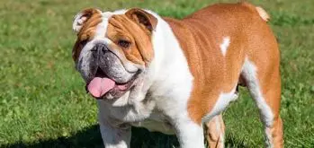
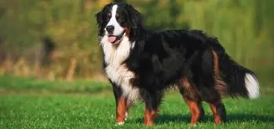
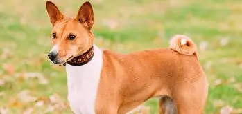

Акита-Ину Среди пород собак, чья история уходит в глубину веков, особо выделяется акита-ину. «Акита» – это префектура в северной части Японии, а «ину» – по-японски «собака».  АНГЛИЙСКИЙ БУЛЬДОГ Считается, что корни у английских бульдогов общие с догообразными собаками Кавказа, древними римскими мастифами, молосскими догами из Греции и кельтскими сторожевыми собаками.  БЕРНСКИЙ ЗЕННЕНХУНД Разводить эту породу начали не так давно – в начале 20-го века в Швейцарии, в городе Берн. Считается, что своим происхождением бернские зенненхунды, так же, как и все молоссы, обязаны тибетским мастифам.  БАСЕНДЖИ БАСЕНДЖИ Если выбираете собаку, которая станет вам верным и добрым другом — обратите внимание на басенджи. Умные и общительные, они отлично ладят не только с людьми, но и с другими собаками.